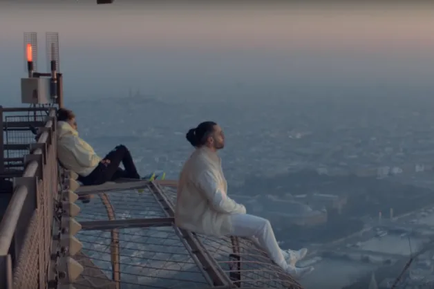
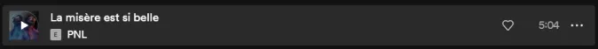

Tarik and Nabil Andrieu, two brothers, born respectively on December 26, 1986 and April 25, 1989, formerly living in the Tarterêts housing estate in Corbeil-Essonnes, are at the origin of one of the most famous French rap group, PNL, which stands for Peace N' Lovés.
The group is quite mysterious, making very few appearances in the networks, and with a total absence of interviews. The only interview accepted was the one with Planète Rap, where they sent a monkey, which "represents" them because they say several times in their music that they grew up in the jungle. their music that they grew up in the jungle.
Image from the clip "Au DD".
Since its debut in 2015, the group has shot music videos all over the world, Japan, Jamaica, Iceland, USA, etc..
The duo's first album was released in 2015, "QLF" which stands for Que La Famille, in the same year Le Monde Chico, followed by Dans La Légende in 2016, ending with Deux Frères in 2019.
The success of this group comes from their difficult lives that they transmit to us through their music, which touches many listeners who can relate to the lyrics they sing.
The album Deux Frères contains a music called "La misère est si belle", the music which marked me the most of all their discographies.

PNL's albums.
The two brothers of Tarterêts deliver themselves once again in this music by beginning with the sentence which became famous, " I'm sad as usual, F*ck it's not worth to think ", which announces us that the music will not be joyful.
I've been listening to this band since 2014, I've attended their concerts, and I found the last album striking because of its content, music of all kinds, qualitative, they transmit us emotions through each of their music. That's why I wrote this article. I let you click on the image below if you want to listen to this music.
